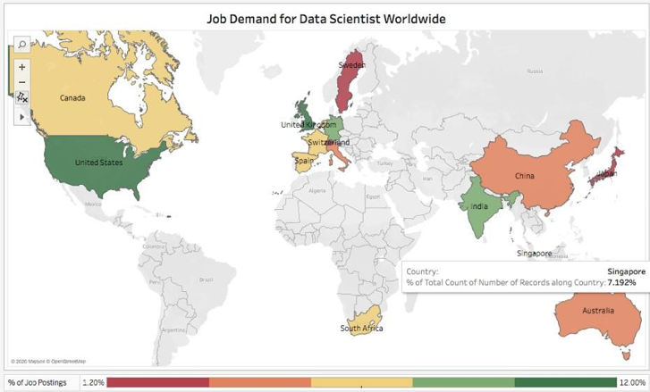
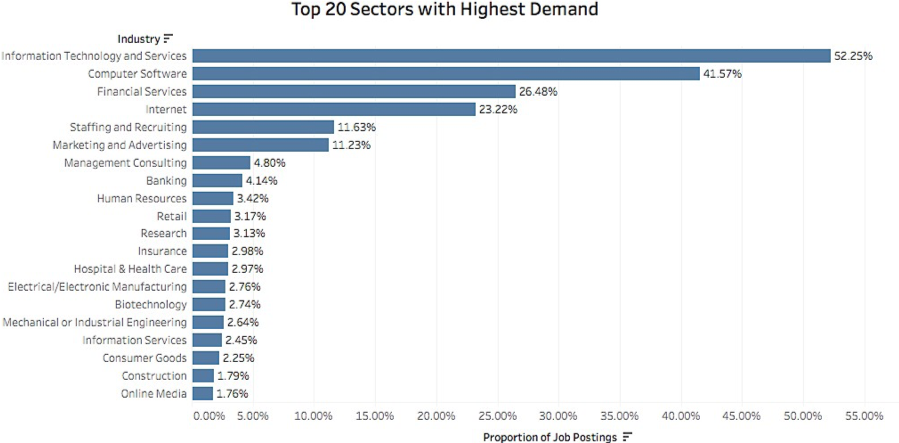
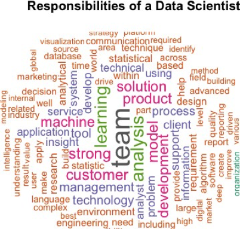
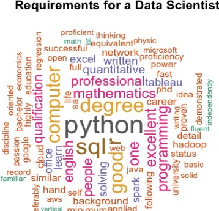
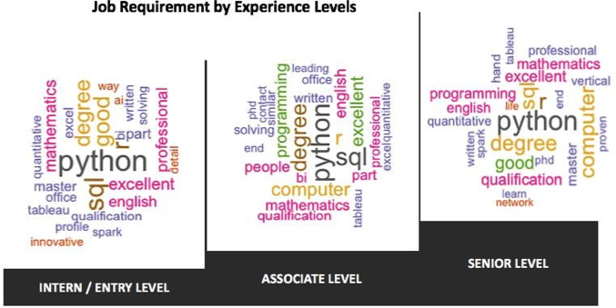
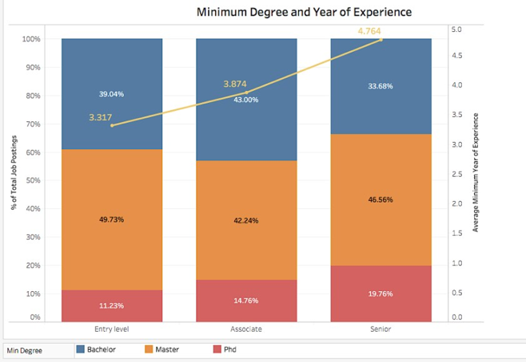
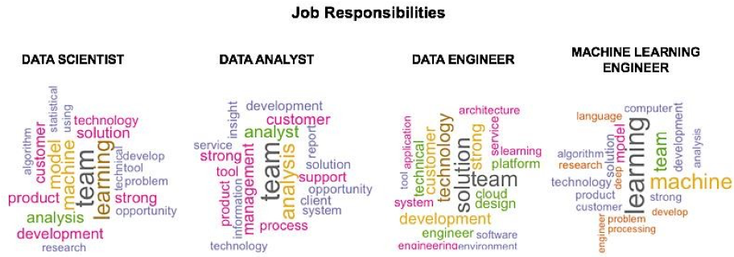
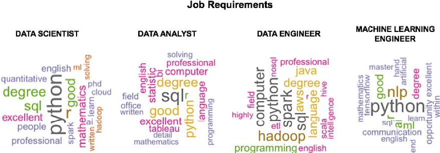

What does a Data Scientist do?
Explore the codes and my interactive visualization at GitHubIntroduction
Inspired by the way tech giants harnessed Big Data to explore unprecedented opportunities, organizations in various sectors are well on their way to building up similar capabilities within their business operation in which Data Scientists play a major role.
There is nevertheless a lack of consensus on the definition of Data Science, and so–called Data Scientists frequently find themselves at the intersection of multiple areas where the skill set required increases in variety and sophistication, especially in the age of Artificial Intelligence when the scope of work has extended beyond traditional analysis and reporting.
This remains overwhelming to any entry–level practitioners and particularly daunting to those without computing or quantitative background that wish to break into the field. Career pathway is also quite ambiguous because companies have their own ways to define the role of Data Scientists, and the term is often used interchangeably with other positions such as Data Analyst, Data Architect or Machine Learning Engineer.
How to launch a Data Science career is one of the top concerns among aspiring novices. Though one might say that career advice is only one Google search away, it is most likely to be company–specific and subject to personal experience.
A more effective job search strategy and comprehensive career plan can be made if one has a real insight into the current labour market for Data Scientist.
Where would be the better place to find it than in data itself?
How about an analysis on what is data analytics? Let's dive right in
1. Where can I find a Data Science job?
As Data Science is an emerging field in IT, opportunities for Data Scientist are more available in developed tech job markets. It is no surprising that United States top the list again with 11.2% of total job postings. Data Scientist was the best job in the U.S in 2019, according to both rankings of LinkedIn and Glassdoor. The outlook for Data Scientist is also extremely promising in the U.K (10.4%), India (9.6%) and Germany (8.6%). India, though a developing country, has become one of the fastest growing tech hubs in the world with an increasing pool of young IT professionals. It is also noticeable that despite being of smaller size than China and Australia, Singapore (7.2%) has cemented its position as APAC’s central tech hub with a thriving innovation culture and strong demand for Data Scientist.

It is important to notice that the number of job postings highly depend on the popularity of LinkedIn in each country. The proportion of job postings may not reflect the true demand in such countries as China, in which LinkedIn is not as widely used as local job sites like Zhaopin.com or 51job.com. The analysis can also be subject to selection bias in the sense that the majority of LinkedIn users are from the U.S, which explains why the country dominates in terms of job postings.

Technology and internet services companies are in greatest need for Data Scientist. However, as technological advances have transformed all kinds of businesses, opportunities are prevalent in non- tech sectors as well.
Data collected mainly through online tracking, benefits Marketing and Advertising companies with respect to better understanding of customer behavior and more effective targeting and advertising strategies. Healthcare industry takes advantage of Big Data to improve the quality of treatment through faster access to patients' medical history as well as early detection and more accurate diagnosis of serious illness. Data Science also fits itself well into human resources practices. Job search sites like LinkedIn need skilled data professionals to curate employee profiles and produce better matching with potential employers and vice versa. Implementing analytics within internal HR department helps improve quality of new hires as well provides insights into current employee engagement and productivity. It is undeniable that Data Science is a transferable skill nowadays.
2. What does a typical Data Scientist do?
Data Scientist is a teamwork position, which requires effective collaboration with many roles including Software Developer, Product Manager, Data Engineers as well as other Data Scientists to deliver technological solutions.
Analytics remains at the core of a Data Scientist’s job. A Data Scientist is first and foremost expected to be able to convert massive volumes of data into actionable insights using statistical techniques and a wide range of technical tools. A large number of Data Scientist roles are closely related to product development in which experiments and product strategies are executed based on the findings generated by Data Scientists which should show an in–depth understanding of the business and customers. Building machine learning models is another key responsibility of a Data Scientist, which puts the role midway between Data Analyst and Machine Learning Engineer.

3. Am I qualified?
Python is the number 1 programming language for Data Scientist, followed by R, SQL and Java.
Most commonly used data analysis libraries and machine learning packages are built on top of these languages, so a Data Scientist is required to be fluent in at least one of them. Though itself not a programming language, SQL is a must–have in a Data Scientist’s toolkit due to the popularity of relational database management systems, and the fact that a large part of a Data Scientist’s job involves retrieving and manipulating data from data warehouse. In terms of qualifications, degrees in Computer Science or Mathematics are preferred though other quantitative fields are sometimes acceptable.
This guarantees that the candidate has solid background to comprehend and perform machine learning or advanced statistical modelling tasks
Data Scientists are also expected to be familiar with big data analytics and processing tools such as Excel, Tableau, Apache Spark, Hadoop or AWS. An ideal candidate should also demonstrate desirable soft skills include effective spoken and written English communication, problem solving along with ability to work effectively both independently and in teams.

4. What is my career path like?
52.6% of job postings are for Internship and Entry level positions, 21.5% for Associate and 15.7% for senior levels or higher. Although job responsibilities across experience levels are closely similar, the requirements are slightly different for each level. Python is a must–have for all levels, however it is significantly required for Senior levels over SQL and R. On the other hand, SQL is equally important as Python for Associate levels. Excel and Power BI are more commonly used by employees at Entry or Associate levels while Tableau is popular for all different job levels. Even an entry–level Data Scientist is expected to have good math background whereas Degree in Computer Science is highly preferred for higher levels.

Although university degree is an essential part of qualification, 58.43% employers never mentioned which levels are required. Among those concerned about education level, 46.37% expected at least a Master degree and 13.5% expected at least a PhD. Nearly half of the Entry level and Associate level jobs required Master level at the minimum. PhD is more likely to be requested for Senior positions, but it can also be seen in job descriptions of some research–focused positions at lower levels. Scanning those job descriptions for Data Scientist, I notice that almost all companies expect candidates to have prior experience, including Entry level ones. Despite the fact that only 48% of employers specified the number of years of experience required, the bar is very high. On average, a qualified applicant for an Entry level position should have a minimum of around 3 years of experience. The number increases to 4 and 5 respectively for the other two levels. When analyzing the data on job requirement, I did not however distinguish between must–have’s and nice–to–have’s, but whether it is mandatory or optional, one must attempt to fit into these requirements to be at an advantage.

5. Comparison with Data Analyst, Data Engineer, Machine Learning Engineer
One of the beginners’ most frequently asked questions is how Data Scientist is different from other Data positions. Answering this question will help us make a though–out plan for our career, explore the suitable areas to specialize in and the right set of skills and knowledge to develop.

Data Analyst:
Data Analyst position is focused entirely on analysis which entails interacting with database systems, exploring insights and reporting results. Therefore, fluency in SQL or BigQuery is a must along with strong knowledge of statistics. A crucial component of reporting is visualization, so it is clear that the toolkit also includes Tableau and Power BI. Python is preferable but very little programming or mathematics is requiredData Engineer:
The role of Data Engineers is to design, develop and maintain data architectures. They work closely with cloud platforms, data warehouse software and large–scale processing systems such as NoSQL, AWS, Hive, Hadoop or Spark especially, thereby more often seen in the skillset of a Data Engineer than other positions. In terms of programming languages, SQL and Python are equally important and heavily required. Java and Scala are sometimes mentioned in the job description, which is rare for Data Scientist and Data Analyst positions. This is a highly technical position, so an ideal candidate is expected to have a computer–related degree.
Machine Learning Engineer:
Machine Learning Engineer, as in the title, is in charge of building and implementing machine learning systems. It is strongly associated with modern–day buzzwords including Artificial Intelligence and Deep Learning. Machine Learning Engineer is a technical position, but the scope of work may also involve research aspects. They can be found reading research papers to comprehend algorithms and to be updated with new AI trends or cutting–edge technologies. In the data appear some new keywords that refer to the tools or frameworks frequently used by Machine Learning Engineer – TensorFlow, Pytorch and Keras. Python is the must–known programming language along with excellent knowledge of popular AI fields like Computer Vision and Natural Language Processing (NLP). R or SQL is not very much concentrated, and PhD is more likely to be a part of the requirements for this position.In comparison with other data positions, Data Scientist can be considered to be “a little bit of everything”. The responsibilities of Data Scientist tend to overlap with those of Data Analyst and Machine Learning Engineer, which involve both analysing data and building machine learning models. The modelling aspect seems to be of higher importance as Python remains a must–have along with proficiency at mathematics. However, the analytics part is what makes an aspiring Data Scientist cannot ignore specialized languages like R and SQL. Machine Learning Engineer is somewhat an independent technical role while Data Scientist, Data Analyst and Data Engineer are more business–oriented and teamwork–based. In fact, in a “full–stack” IT department in which roles are specialized, these 3 positions normally collaborate with each other in order to deliver product solutions.
Key takeaways
- Data Scientist is in high demand in most developed economics and more often found in big cities where tech ecosystem is most thriving. Every continent has a dominant hunting spot for Data Scientist jobs. The U.S dominates North America and the world not only with respect to Data Scientist but IT roles in general. India and Singapore stand out across Asia whereas the U.K, specifically England is the most desirable location to start a Data Science career in Europe.
- There are no clear boundaries among data positions, and they are all sometimes referred to as a Data Science job. I would prefer to regard Data Scientist as a generalist in the sense that the role is of more advanced analytics than Data Analyst, but on the other hand less technical and AI–focused than Machine Learning Engineer. Though Data Scientist and Data Engineer roles share the least in common, their requirements still overlap in terms of knowledge on database systems and experience with specialized data processing tools often seen in the toolkit of Data Engineer
- Getting an Entry level job is not easy. It not uncommon to come across a job posting that requires a PhD or a long list of technical skills for an Entry level position. This means aspiring novices must step up their game and build up a variety of skills and experience so that they can adjust to different requirements from employers.